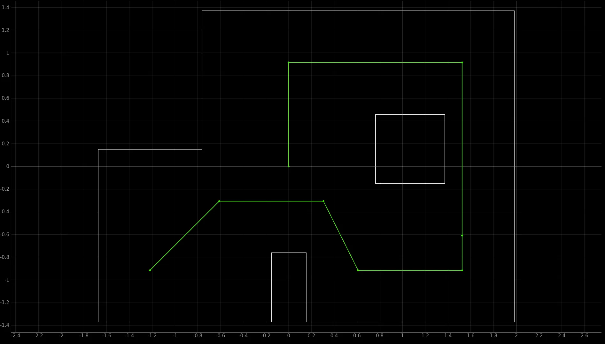

Lab 12 - Path Planning and Execution
5.4.23Introduction
In this lab I combined my work in all past labs to make my car intelligently follow a set of waypoints.
The waypoints are as follows:
1. (-4, -3) <--start
2. (-2, -1)
3. (1, -1)
4. (2, -3)
5. (5, -3)
6. (5, -2)
7. (5, 3)
8. (0, 3)
9. (0, 0) <--end

Strategy
Note that all waypoints are reachable using a straight line path from the previous waypoint. Because my localization results are so promising, I chose to ignore obstacle avoidance and trust that I can accurately follow the straight line paths. The resulting routine is:
- Localize
- If localized point = waypoint, set next point as target waypoint.
- Calculate angle and distance to target waypoint
- Rotate to target angle
- Move forward for time proportional to distance
- Go to 1
By running through this process enough times, the robot will eventually navigate the entire path.
Implementation
Artemis Side
For my previous labs, I used Python as a commander for most of the robots actions. This works fine when doing isolated tasks (ie localizing one time), but can lead to accumulated errors when the tasks are chained together. A large part of the error comes from BLE communication delay, which is non-deterministic.
Instead of trusting the unreliable timing from the laptop, I implemented a series of modes for the Artemis to address timing sensitive routines. These routines are seek angle, travel straight for time, and get localization readings. Pieced together, they are all thats needed for the algorithm outlined in strategy.
if(current_mode == TAKE_READINGS){
if(mode_changed){
// Record the starting rotation
reading_start_rot = sensor_readings.gyro.z;
// Init PID
pid_controllers.pid[ROTATION].reset();
pid_controllers.pid[ROTATION_RATE].reset();
pid_controllers.setpoints[ROTATION] = reading_start_rot;
pid_controllers.setpoints[ROTATION_RATE] = current_target;
// Take readings
data_buffers.enabled[POSE] = true;
data_buffers.enabled[TOF] = true;
}
// Do a 360 to take readings
if(sensor_readings.gyro.z - reading_start_rot < 360.0){
float out = pid_controllers.pid[ROTATION_RATE].output;
if(out >= -0.1){
out = -0.1;
}
set_wheel_output(out, -out);
}else{
data_buffers.enabled[POSE] = false;
data_buffers.enabled[TOF] = false;
current_mode = SEEK_ANGLE;
current_target = reading_start_rot;
}
}
if(current_mode == SEEK_ANGLE){
pid_controllers.setpoints[ROTATION] = current_target;
float out = pid_controllers.pid[ROTATION].output;
set_wheel_output(out, -out);
}
if(current_mode == MOVE_FORWARD){
if(mode_changed){
pid_controllers.setpoints[ROTATION] = sensor_readings.gyro.z;
mode_start = millis();
}
float out = pid_controllers.pid[ROTATION].output;
if(millis() - mode_start < 100){
set_wheel_output(0.5 + out, 0.5 - out);
}
else if(millis() - mode_start < current_target){
set_wheel_output(0.2 + out, 0.2 - out);
}else{
set_wheel_output(0, 0, true);
}
}
Python Side
The straight line strategy I adopted requires precise localization to be effective. To get better readings, I doubled the resolution of the Bayes filter in all dimensions.
# Discrete cell sizes
# It is recommended that you do not change these values, unless you truly know what you are doing
cell_size_x: 0.1524
cell_size_y: 0.1524
cell_size_a: 5
# Number of cells in each dimensions(x,y,a)
# Calculated based on the range divided by the cell size in each dimension
# Ex: max_cells_x = (max_x-min_x)/cell_size_x
# Must be integers
max_cells_x: 24 # Total number of grid cells in the x direction
max_cells_y: 18 # Total number of grid cells in the y direction
max_cells_a: 72 # Total number of grid cells in the a direction
Increasing the number of views dramatically increased the precaching time, taking it from 10 seconds to around two minutes. Luckily, this computation is only variable based on the map and the sensor arrangement, neither of which will change. I edited the base localization code to save the output to a file, then loaded the data from the file on future runs.
Results
I was unfortunately unable to finish this lab. The robot was able to successfully navigate two waypoints, then the motor drivers would overheat and cause the movement to become erratic. I hypothesize this had something to do with the rapid direction changes from the PID loop for angular velocity control. My laptop also decided to kick the bucket while debugging this issue, so thats all she wrote folks!
Thanks for a great semester to everyone involved. Live laugh fast robots.